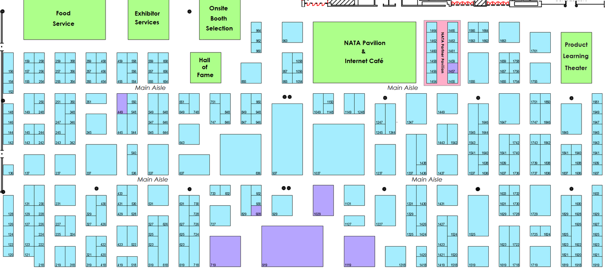

Import GeoJSON
Export GeoJSON
×
Close
GeoJSON for Current Map
×
Close
Load GeoJSON Map
×
Close
GeoJSON for Current Map
Select Wall Color:
Select Roof Color:
Set Object Height:
Set Min Height(
Used to stack objects for complex designs
):